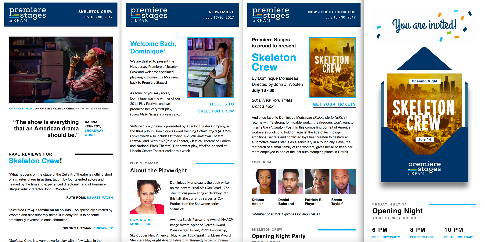
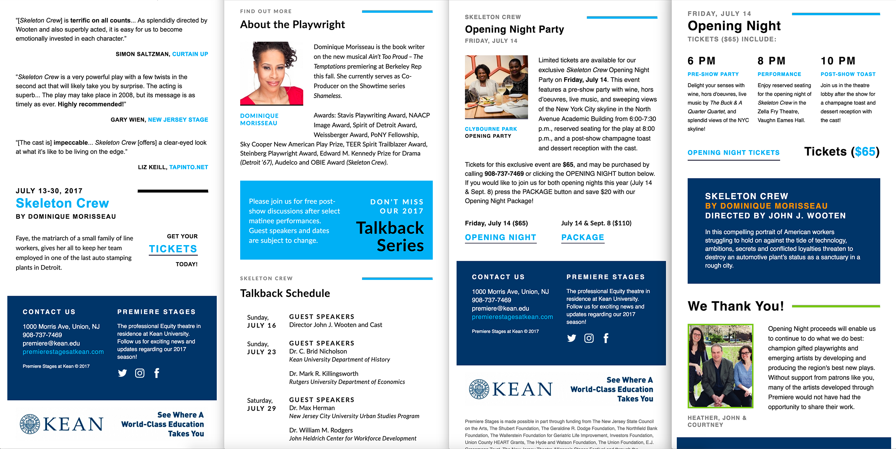
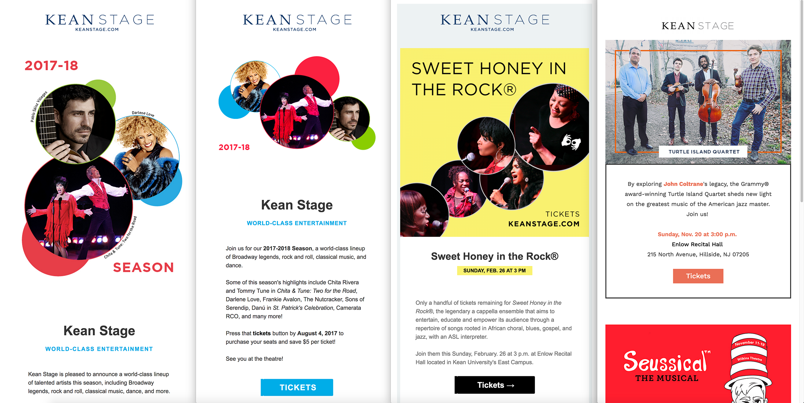
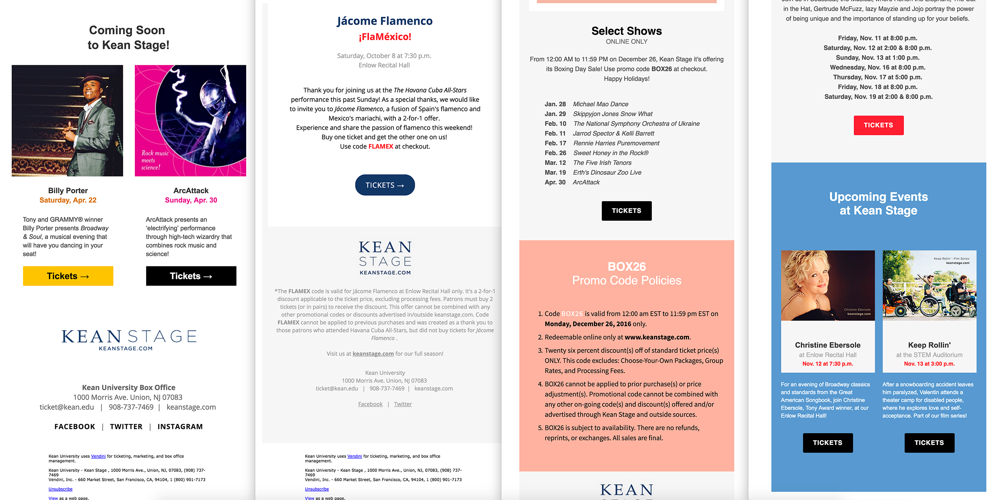
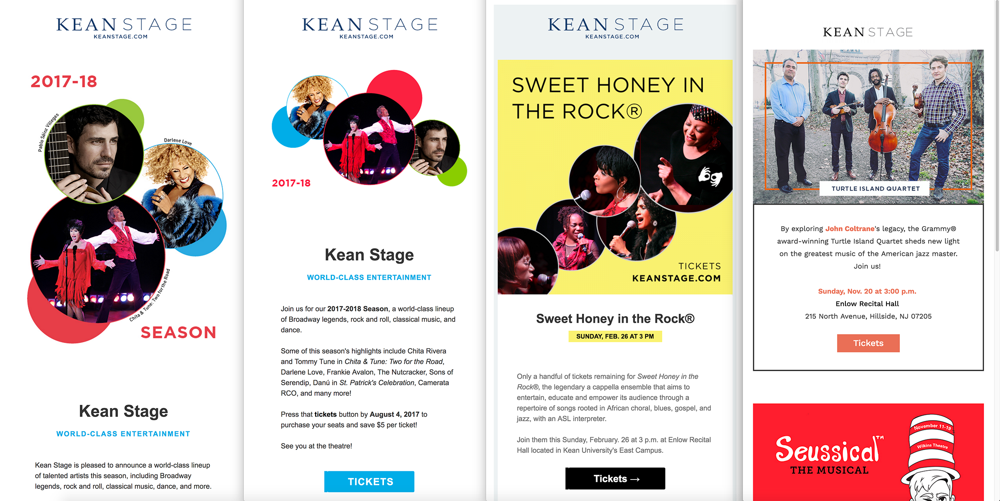
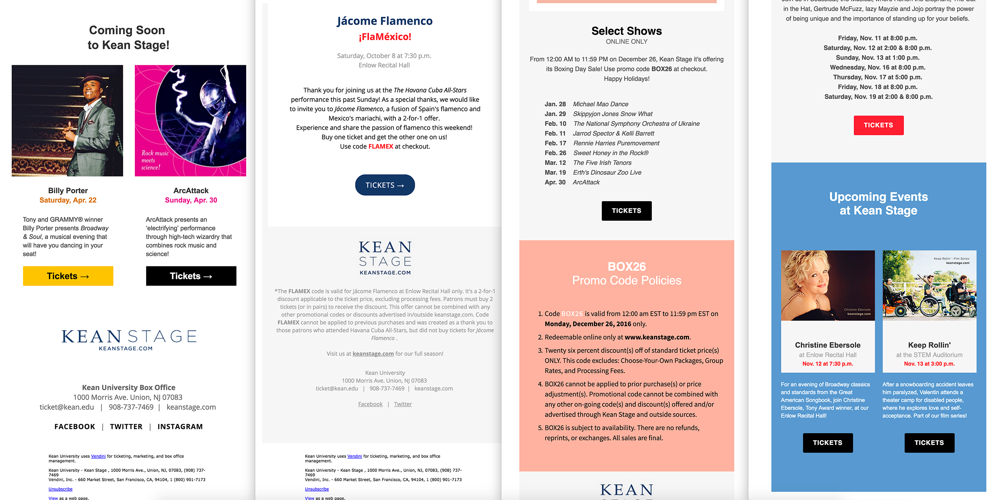
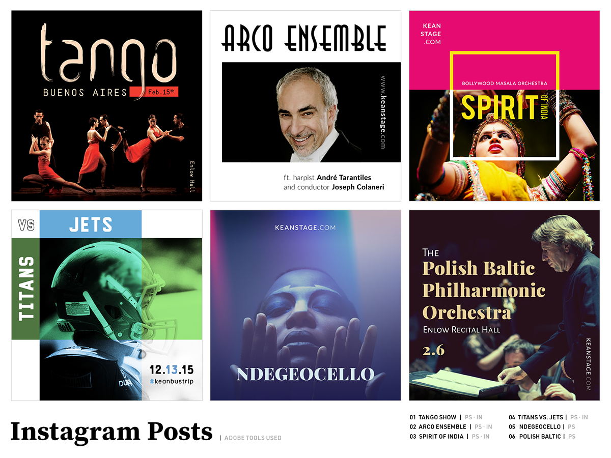

Recent Work
Premiere Stages Email Campaigns (HTML)
 Top & bottom parts of 4 tailored email campaigns for Premiere Stages. The design needed to tie in with the new identity, still allow for lots of copy, and at the same time be readable, responsive, and recognizable.
Premiere Stages New Identity

Premiere Stages is the professional theatre in residence at Kean University.
I designed their logo to be friendly and easy to use, but still highlight their name, and their 3 stages: play factory, premiere artists, and play festival. Each of the stages have their own logo as well, as seen in their Training (Premiere Artists) page.
Premiere Stages New Website
Created XD prototypes for every facet of the new website.
Kean Stage Email Campaigns
 

Top and bottom screenshots of various email campaigns for Kean Stage. Tools used when creating these: (1) Leuchtturm 1917, (2) Sublime Text & Dreamweaver, (3) Photoshop, (4) Illustrator.
Social Media Posts
Created social media posts for Kean Stage to reflect email campaigns or vice versa, from Instagram, to Twitter and Facebook. See more of them on Bēhance!